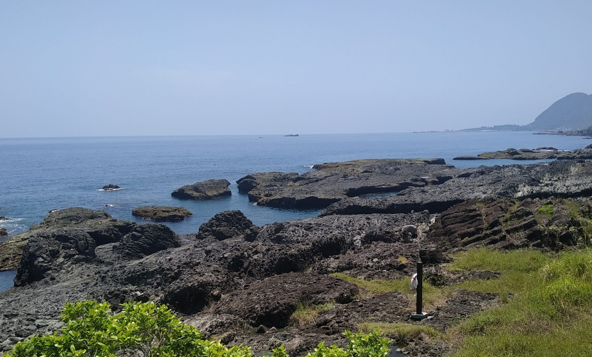

關於我
大家好，我是李珮誼，也可以叫我Angel。現在是個就讀清華大學外國語文學系二年級的學生，最近開始學習日文作為我的第二外語。我在新竹市出生長大。人們都說新竹是美食沙漠，雖然我想為此說點什麼，但是我其實沒有知道很多便宜又好吃的餐廳。所以這個學期我決定去發掘更多在清大附近的餐廳。
空閒的時候，我會在YouTube上看影片或是聽音樂（大部分是日文流行歌）。我喜歡看漫畫和動漫，有時候也會畫動漫作品裡面的角色。但是現在變忙了也沒有點子，希望有空能繼續畫圖。如果你也喜歡看漫畫，我會推薦你《鋼之鍊金術師》。這部漫畫是我目前最喜歡的漫畫，非常值得一看。我也喜歡唱歌，國高中時期都去參加了學校的合唱團。唱歌能讓我忘卻煩惱和放鬆，所以我很享受唱歌這件事。